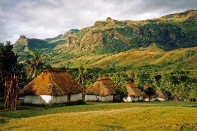
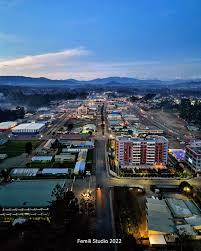

Travel Destination

- Hagen

Located in the highlands of Papua New Guinea, Mount Hagen is known for its vibrant cultural traditions and dramatic mountain scenery. One of its most unique features is the annual Mount Hagen Show, where tribes from across the region gather in colorful traditional dress to celebrate sing-sings, dance, and heritage, making it one of the country’s most spectacular cultural events.
">